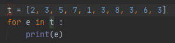
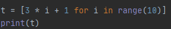
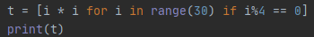
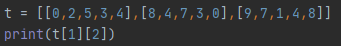
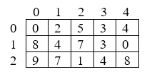
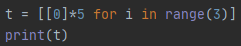
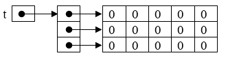
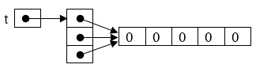
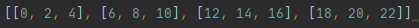

Soit le programme suivant :
Tester ce programme et observer le résultat.
Par quel programme utilisant une syntaxe déjà connue peut-on le remplacer ?
On peut parcourir les éléments d’un tableau avec la construction for e in t où e est une variable qui va recevoir successivement tous les éléments de t.
L’itération directe sur les éléments du tableau correspond à une vision un peu plus abstraite.
Le tableau est ici ramené à une collection d’éléments dans lequel on a masqué le fait que chaque élément était associé à un indice i.
Cette forme est plus simple à lire et à écrire, mais n’est applicable que lorsqu’on n’a pas besoin d’utiliser l’indice i.
Ecrire une fonction qui renvoie la valeur maximale d’un tableau en utilisant la construction précédente.
Soit le programme suivant :
Tester ce programme et observer le résultat.
Par quel programme utilisant une syntaxe déjà connue peut-on le remplacer ?
Construire un tableau contenant les 100 premiers nombres pairs par compréhension.
Soit le programme suivant :
Tester ce programme et observer le résultat.
La construction d’un tableau par compréhension se fait avec la syntaxe suivante :
[e for x in t] où e est une expression qui dépend d’une variable x qui parcourt les éléments de t.
Soit le programme suivant :
Quel est le résultat de son exécution ?
Vérifier en testant le programme.
Les tableaux en Python peuvent contenir des valeurs arbitraires et l’on peut donc construire un tableau de tableaux.
Il est appelé tableau à plusieurs dimensions.
Dans l’exemple ci-dessus il a deux dimensions et on dira que sa taille est 3×5.
On peut se le représenter comme une grille :
Soit le programme suivant :
Quel est le tableau construit ?
Vérifier en testant le programme.
Pour construire un tableau de tableaux, on peut se servir de la construction par compréhension
Dans l’exemple précédent, l’expression [0]*5 a été évaluée 4 fois et on obtient donc 4 tableaux différents.
On peut représenter la situation de la façon suivante :
Attention, la construction : t = [[0]*5]*3 produit le résultat suivant:
Ecrire un programme construisant le tableau suivant :
Ecrire un programme construisant un tableau t de taille 11×11 tel que t[i][j] contient i×j.
Ecrire un programme qui transforme un tableau t de 64 cases en un tableau m à deux dimensions, de taille 8×8, tel que m[i][j]=t[8*i+j] pour tout couple i, j compris entre 0 et 8 exclu.
Ecrire un programme qui transforme un tableau m à deux dimensions, de taille 8×8, en un tableau t à une dimension de taille 64 tel que t[8*i+j] = m[i][j] pour tout couple i, j compris entre 0 et 8 exclu.
Indication : commencer par créer le tableau t, puis le remplir avec une double boucle.
Ecrire un programme qui crée un tableau à deux dimensions, de taille 30×30 contenant des entiers tirés au hasard entre 1 et 9999, puis l’affiche.
Compléter ce programme pour qu’il affiche le maximum du tableau.
Ecrire une fonction qui prend en paramètre un tableau à deux dimensions de hauteur et de largeur non nulles et qui renvoie le maximum parmi les minima de chaque ligne.
On pourra utiliser une fonction auxiliaire pour calculer le minimum d’une ligne.